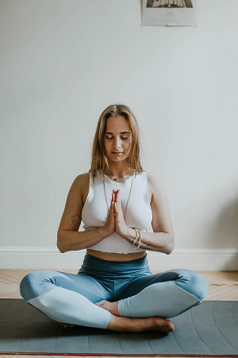

Quem Sou Eu?
Estudante de Desenvolvimento e Programação do Interior da Bahia, Formado no Ensino Médio e Formado em um Curso Técnico do Senai, E admito que tenho talento pra esse negócio de Desenvolver Site.
Conclui 2 dos 3 Módulos do curso de HTML5 e CSS3 da plataforma de estudo do CursoemVideo, Fiz anteriormente um curso de JavaScript mais sem ter uma base de HTML e CSS não adiantou muita coisa, informações jogadas no vazio do meu Cérebro.
Entretando Tenho Alguns Projetos feitos com HTML5 e CSS3 Para Mostrar, e Um pequeno projeto com um pouco de JavaScript, uma brincadeira cientifica que fiz.
Projetos
Site Android

Primeito site feito assim que conclui o módulo 2, Visite o Site.
Site Fitness

Site Profissional na área de educação física e nutricional para mulheres, Visite o Site.
Site Ciêntifico
Fiz esse site em cima de um código feito quando comecei a estudar JavaScript, Nele haverá Notícias desatualizadas sobre o mundo cientifico e no menu em Planetas terá uma página dedicada há eles, Visite o Site.
Cordel
Um Site com efeito paralax Contendo um cordel feito em um desafio do CursoemVideo, Visite o Site.